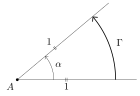
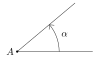
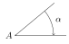
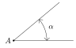
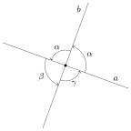
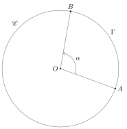
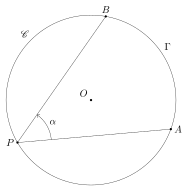
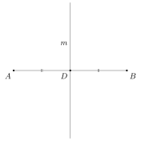
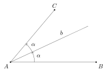

Eclats de vers : Matemat : Angles
Table des matières
1. Définition
Un angle \(\anglecirc{BAC}\) est défini par :
- un sommet au point \(A\)
- deux demi-droites \([AB\) et \([AC\) qui délimitent un secteur du plan
On associe également à \(\anglecirc{BAC}\) l’ensemble des points situées entre les deux demi-droites
Dans cet ouvrage, on appelle côtés d’un angle les deux demi-droites qui le délimitent.
Le schéma ci-dessous représente un angle de sommet \(A\) délimité par les demi-droites \([AB\) et \([AC\) :

Il existe toutefois une ambiguïté quant au chemin emprunté par l’angle pour aller du premier côté au second. Pour lever cette ambiguïté, on trace un arc de cercle pour indiquer le chemin parcouru. Dans notre schéma, l’angle tourne dans le sens anti-horlogique pour aller de \([A,B)\) vers \([A,C)\).
1.1. Autres notations
L’angle \(\anglecirc{BAC}\) se note aussi :
\[ \angle BAC = \sphericalangle BAC = \measuredangle BAC = \anglecirc{BAC} \]
Lorsque les côtés de l’angle sont évidents d’après le contexte, on le note simplement :
\[ \anglecirc{A} = \anglecirc{BAC} \]
2. Amplitude
2.1. Définition
L’amplitude d’un angle, exprimée en radians, se définit comme le la longueur d’un arc de cercle :
- issu d’un cercle unitaire
- délimité par les côtés de l’angle
Considérons un angle \(\anglecirc{BAC}\) et traçons un arc de cercle \(\arcdecercle{DE}\) de centre \(A\) et de rayon \(1\), comme dans le schéma ci-dessous :

L’amplitude \(\alpha\) de l’angle \(\anglecirc{BAC}\) est alors définie comme la longueur de cet arc de cercle :
\[ \alpha = \abs{\anglecirc{BAC}} = \abs{\arcdecercle{DE}} \]
En pratique, on confond souvent un angle avec son amplitude.
2.2. Autres notations
L’amplitude de l’angle \(\anglecirc{BAC}\) se note aussi :
\[ \abs{\angle BAC} = \abs{\sphericalangle BAC} = \abs{\measuredangle BAC} = \abs{\anglecirc{BAC}} \]
Lorsque les côtés de l’angle sont évidents d’après le contexte, on note simplement l’amplitude par :
\[ \abs{\anglecirc{A}} = \abs{\anglecirc{BAC}} \]
2.3. Signe
On peut donner un signe à l’amplitude d’un angle :
- un angle est dit positif si il tourne dans le sens anti-horlogique
- un angle est dit négatif si il tourne dans le sens horlogique
Dans un schéma, l’orientation d’un angle se symbolise par une flèche. Le schéma ci-dessous représente un angle orienté positivement :

Le schéma ci-dessous représente un angle orienté négativement :

Le schéma ci-dessous représente un angle dont l’orientation est indéterminée :

On assimile ce dernier type d’angle à un angle positif.
2.4. Fractions d’un cercle unitaire
Lorsque l’angle parcourt un tour complet, la mesure de l’arc de cercle est égale au périmètre entier du cercle de rayon \(1\) :
\[ \mathcal{P}_1 = 2 \ \pi \]
et l’angle vaut :
\[ \tau = 2 \ \pi \]
Pour une fraction \(f\) du cercle unitaire, l’angle \(\alpha\) vaudra :
\[ \alpha = 2 \ \pi \ f \]
Le tableau ci-dessous recense quelques cas courants :
| Nombre de tours | Angle |
|---|---|
| \(1\) | \(2 \ \pi\) |
| \(1/2\) | \(\pi\) |
| \(1/3\) | \(2 \ \pi / 3\) |
| \(1/4\) | \(\pi / 2\) |
| \(1/6\) | \(\pi / 3\) |
2.5. Glossaire
Le tableau suivant donne les noms des angles les plus courants :
| Nom | Nombre de tours | Angle |
|---|---|---|
| angle nul | \(0\) | \(0\) |
| angle plein | \(1\) | \(2 \ \pi\) |
| angle plat | \(1/2\) | \(\pi\) |
| angle droit | \(1/4\) | \(\pi / 2\) |
On a aussi :
- angle aigu : un angle compris entre l’angle nul et l’angle droit
- angle obtus : un angle compris entre l’angle droit et l’angle plat
- angle saillant : un angle inférieur à l’angle plat
- angle rentrant : un angle supérieur à l’angle plat
Deux angles sont dit :
- supplémentaires si leur somme vaut un angle plat
- complémentaires si leur somme vaut un angle droit
2.6. Radian
Le radian est l’unité d’amplitude d’un angle définie par la longueur d’un arc de cercle unitaire. Son symbole est :
\[ \mathrm{rad} \]
Pour un angle \(\rho\), on aura donc :
\[ \rho = \rho \ \mathrm{rad} \]
En pratique, on omet souvent cette unité, car le radian est l’unité d’angle par défaut.
2.7. Degrés
2.7.1. Définition
L’amplitude d’un angle \(\delta\) exprimé en degrés se note :
\[ \delta^\circ \]
Cette amplitude se définit par le fait qu’un tour complet vaut :
\[ 360^\circ \]
Or, ce tour complet exprimé en radians vaut également \(2\ \pi\). On a donc :
\[ 360° = 2 \ \pi \]
On en déduit directement qu’un demi-tour vaut :
\[ 180° = \pi \]
2.7.2. Tableau comparatif des radians et degrés
Les amplitudes en degrés et en radians étant proportionnelles, on en déduit la valeur en degrés de n’importe quelle valeur en radians. On a en particulier :
| Tours | Radians | Degrés | Nom |
|---|---|---|---|
| \(1\) | \(2\ \pi\) | \(360^\circ\) | angle plein |
| \(1/2\) | \(\pi\) | \(180^\circ\) | angle plat |
| \(1/4\) | \(\pi/2\) | \(90^\circ\) | angle droit |
| \(1/6\) | \(\pi/3\) | \(60^\circ\) | |
| \(1/8\) | \(\pi/4\) | \(45^\circ\) | |
| \(1/12\) | \(\pi/6\) | \(30^\circ\) | |
| \(3/4\) | \(3 \ \pi/2\) | \(270^\circ\) | |
| \(2\) | \(4 \ \pi\) | \(720^\circ\) |
3. Angles opposés par le sommet
Examinons le schéma ci-dessous, où \(a\) et \(b\) sont deux droites sécantes :

Les angles \(\alpha\) et \(\beta\) sont dits opposés par le sommet. Il en va de même pour \(\gamma\) et \(\delta\).
Comme \(\alpha\) et \(\gamma\) forment ensemble un angle plat, on a :
\[ \alpha + \gamma = 180^\circ \]
Pareil pour \(\beta\) et \(\gamma\) :
\[ \beta + \gamma = 180^\circ \]
En soustrayant la seconde équation de la première, on obtient :
\[ \alpha + \gamma - \beta - \gamma = 0 \]
Les angles \(\gamma\) se simplifient et on a :
\[ \alpha - \beta = 0 \]
c’est-à-dire :
\[ \alpha = \beta \]
On démontre par un raisonnement similaire que :
\[ \gamma = \delta \]
Deux angles opposés par le sommet sont donc de même amplitude.
4. Droites perpendiculaires
4.1. Préambule
Soit deux droites sécantes \(a\) et \(b\) qui se coupent en formant, du même côté de \(a\), des angles symétriques à leur points d’intersection.

Comme \(\alpha\) et \(\beta\) sont des angles opposés par le sommet, ils sont de même amplitude :
\[ \alpha = \beta \]
Idem pour \(\alpha\) et \(\gamma\) :
\[ \alpha = \gamma \]
Tous les angles situés autour de l’intersection de \(a\) et \(b\) sont donc identiques.
Comme les deux angles \(\alpha\) forment, avec \(\beta\) et \(\gamma\), un angle plein, on a :
\[ 2 \ \alpha + \beta + \gamma = 360^\circ \]
En tenant compte des résultats précédents, cette équation devient :
\[ 4 \ \alpha = 360^\circ \]
ce qui nous donne :
\[ \alpha = 90^\circ \]
Tous les angles formés par l’intersection des deux droites sont des angles droits. Ce constat nous amène à la définition des droites perpendiculaires.
4.2. Définition
On dit que deux droites \(a\) et \(b\) sont perpendiculaires si elles sont sécantes et se coupent en formant quatre angles droits à leur point d’intersection. On le note :
\[ a \perp b \]
Dans un diagramme, on le signale souvent par un petit carré situé dans un coin de l’angle, comme dans le schéma ci-dessous :
4.3. Segments
Deux segments \([A,B]\) et \([C,D]\) sont dits perpendiculaires si ils se coupent en formant des angles droits. On le note :
\[ [A,B] \perp [C,D] \]
4.4. Construction
5. Angle et cercle
5.1. Angle au centre
Soit un cercle \(\mathscr{C}\) de centre \(O\). Un angle au centre de \(\mathscr{C}\) est un angle :
- dont le sommet est le centre \(O\) du cercle
- dont les côtés sont des rayons du cercle
Dans le schéma ci-dessous, l’angle \(\alpha = \anglecirc{AOB}\) est un exemple d’angle au centre :

5.2. Angle inscrit
Soit un cercle \(\mathscr{C}\) de centre \(O\). Un angle inscrit dans \(\mathscr{C}\) est un angle :
- dont le sommet est un point du cercle
- dont les côtés sont sécants au cercle
Dans le schéma ci-dessous, l’angle \(\alpha = \anglecirc{APB}\) est un exemple d’angle inscrit :

6. Médiatrice
6.1. Définition
La médiatrice d’un segment est la droite qui croise perpendiculairement ce segment en son point milieu.
Le schéma ci-dessous représente une médiatrice \(m\) qui croise perpendiculairement le segment \([A,B]\) au point milieu \(D\) :

6.2. Construction
Le schéma ci-dessous illustre la construction de la médiatrice \(m\) du segment \([A,B]\) :

On définit :
\[ \mathscr{L} = \abs{AB} \]
Voici les étapes de cette méthode de construction :
- ouvrir le compas d’un rayon \(r\) à peu près compris entre
\(2 \ \mathscr{L} / 3\) et \(\mathscr{L}\)
- si le rayon est trop près de \(\mathscr{L}/2\), les points d’intersection vont être très proches, ce qui peut poser un problème de précision
- tracer un arc de cercle \(\mathscr{C}_1\) de centre \(A\) et de rayon \(r\)
- tracer un arc de cercle \(\mathscr{C}_2\) de centre \(B\) et de rayon \(r\)
- on note \(C\) et \(D\) les deux points d’intersections de \(\mathscr{C}_1\) et \(\mathscr{C}_2\)
- tracer \(m = (DE)\) la médiatrice du segment \([A,B]\)
7. Bissectrice
7.1. Définition
La bissectrice d’un angle est la droite qui passe par le sommet de cet angle et qui le divise en deux angles de même amplitude.
Le schéma ci-dessous représente une bissectrice \(b\) d’un angle \(\anglecirc{BAC}\) qui passe par \(A\) et divise \(\anglecirc{BAC}\) en deux angles \(\alpha\) d’amplitudes égales :

7.2. Construction
Le schéma ci-dessous illustre la construction de la bissectrice \(b\) de l’angle \(\anglecirc{AOB}\) :

Voici les étapes de cette méthode de construction :
- ouvrir le compas d’un rayon \(r_1\)
- tracer un arc de cercle \(\mathscr{C}_1\) de centre \(O\) et de rayon \(r_1\)
- soit \(D\) l’intersection de la droite \((OA)\) avec \(\mathscr{C}_1\)
- soit \(E\) l’intersection de la droite \((OB)\) avec \(\mathscr{C}_1\)
- ouvrir le compas d’un rayon \(r_2\)
- tracer un arc de cercle \(\mathscr{C}_2\) de centre \(D\) et de rayon \(r_2\)
- tracer un arc de cercle \(\mathscr{C}_3\) de centre \(E\) et de rayon \(r_2\)
- le rayon de \(\mathscr{C}_3\) est donc le même que celui de \(\mathscr{C}_2\)
- soit \(I\) l’intersection de \(\mathscr{C}_2\) avec \(\mathscr{C}_3\)
- tracer \(b = (OI)\) la bissectrice de l’angle \(\anglecirc{AOB}\)